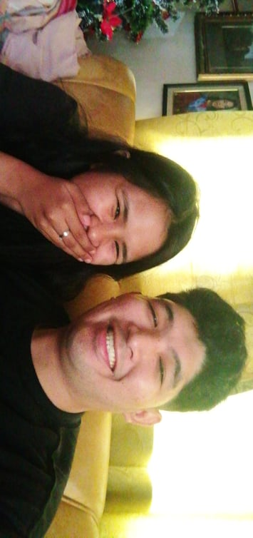
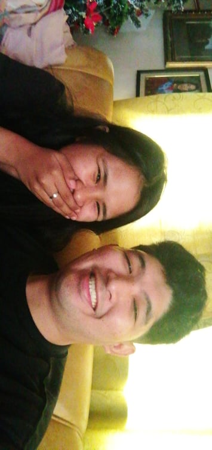

Dear Jessa Albarico,
As we stand here, 4 years into our journey, I find myself overwhelmed with gratitude for every moment we've shared. Through the highs and lows, the struggles and triumphs, our love has only grown stronger.
You've sometimes wondered if my love for you is real, if I care about you as much as you do for me. Let me assure you that this website isn't just a digital collection. I hope it brings you joy and that you like it. It's my way of showing how much I care about you, and how much I love our relationship.
As you explore these pages, filled with memories and moments we've shared, I hope you'll see the depth of my feelings for you. You are the most important person in my life, and this website is a tribute to our love.
First meeting as a couple


Covid era 🤣
Finally meeting my parents🥰
Valentines


Unplanned Dates


Travels Kuno
MARCATUBIG BEACH
TACLOBAN CITY/MC ARTHUR


ALICO RESORT & WATER PARK


SPICE OF LIFE BEACH RESORT


Christmas & New Years

We've shared countless wonderful memories together that are simply priceless. Now, let's take a trip down memory lane and relive those precious moments as we browse through our photo gallery


 


Journey to our first success!
Uncaptured Memories
Uncaptured Struggle
Uncaptured moments
Sini na picture adi didi an mga times na nagkukuri kit san online class labi na sa programming san time na waray ak programming na subject. nahinumdom laak sadto na may pagtangis kana kay deadline na pero waray paak code kay waray ak mag aram.
Sini na picture adi didi an mga times na nagbubuligay kit sa aton mga module. ikaw sa minors tapos ako sa major subjects which is maupay an dalagan saton teamwork naging masayon la an buhay.

Axie Infinity/Crypto/Trading
Sini didi na picture malipayon kit dinhi san una pala kay feel ta magyaman kit didi hahaha. paspas grind padamo iskolar para makadamo SLP. ngan oo nakadamo kit sini pangaon sa Zions tungod san SLP pero panandaliang saya la ngayan.
Sini dinhi na part dinhi nagkaletche letche tanan. nadepressed, napabayaan an pag eskwela, an pagkaturog na stress nga malala kay criticals haahha. mao ini dinhi an pinaka malala na nahinabo sa akon ngan mao liwat an usa sa maupay kay didi nagtikang na mag grow as a person.

Capstone Project/Defense
Sini didi na picture maupay na sini aton kangisi kay road to graduate na kit. natanggalan nakit sini dinhi tunok sa tiil hahahaha. mao siguro an pinakamasaya na part san aton pagiging student(malamang)
An mga kakurian ngan sakit sa ulo sa paghinimo thesis nawara na dinhi ngan dinhi na liwat nagtikang an aton maupay na pagkaturog hahahaha. feeling accomplished na pero diri pa tapos kay may OJT pa.
Capstone Project/Defense
Sini didi na picture nakatapos nakit san aton OJT which means mapaso na kit, final round na. tanan na kakurian san pag OJT nawara na sini dinhi na picture kay tapos na man. an pagbinaktas tikang liteclerck pakadto guada kada panguli ngan halos halos maubosan nakit kwarta makuri pag pininsaron pero nalampasan ta na magkaupod kit.
Thankful kit sini na aton OJT kay mag upay an aton mga sir ngan mga maam bisan san una diri kit nagkakasundo kun diin kit mag OJT kay ako nahadlok ak bangin waray kit kaonon sa cebu pero pumalag kit gyapon hahahaha. nakaya ta.
Salamat kanda san aton mga nakaupod kan kathleen, ruby labi na kan joel kay ginpagaan nira an mga gastoson ngan hirimuon sa aton balay sa guada labi na kan kuya cis na permi ready pag mag aaro ak nakakabulig sa aton na duha para mahuman ta aton OJT.
Ngan lastly ako an magpasalamat sa imo lab kay bisan hubyaon ak maglaba ngan sige kit away sadto sa cebu adi kala gyapon sa akon. Thank you labs hart hart.
We made it!
kaupay naton didi baga kit an mga taga malakanyang hahahaha. naangay la kit na duwa. hays
Kaupay san aton frame. bisan adto pa kit cebu mafeel mo gud na graduate na kit hahahaha


Adi na pictorial na. kabuyod naton na duha naangay kit san toga. abot na naton an tagumpay.
Didi sini na picture diri pa kit graduate gud kay aga man ini hahahah. kahusay mo dida kaupay san imo tiil hahaha. bagay ka gud talaga sa akon kaperfect naton kitaon bisan diri gud perfect an kapicture.
Ini na picture kaupay sini sa pamati na makitan ko ikaw mapaso sa stage. proud ak urarua sa imo lab. tanan na imo hardwork nasuklian na. diri gud ini dako na success na mag graduate kit pero as a student usa na ini na pinakadako na success na aton makakarawat. as sa imo pagiging student na kaupod ak usa la akon mayayakan WE MADE IT!...
THIS WEBSITE ENDS HERE BUT OUR LOVE WILL NEVER ENDS!
CLICK HERE AFTER YOU FINISHED READING